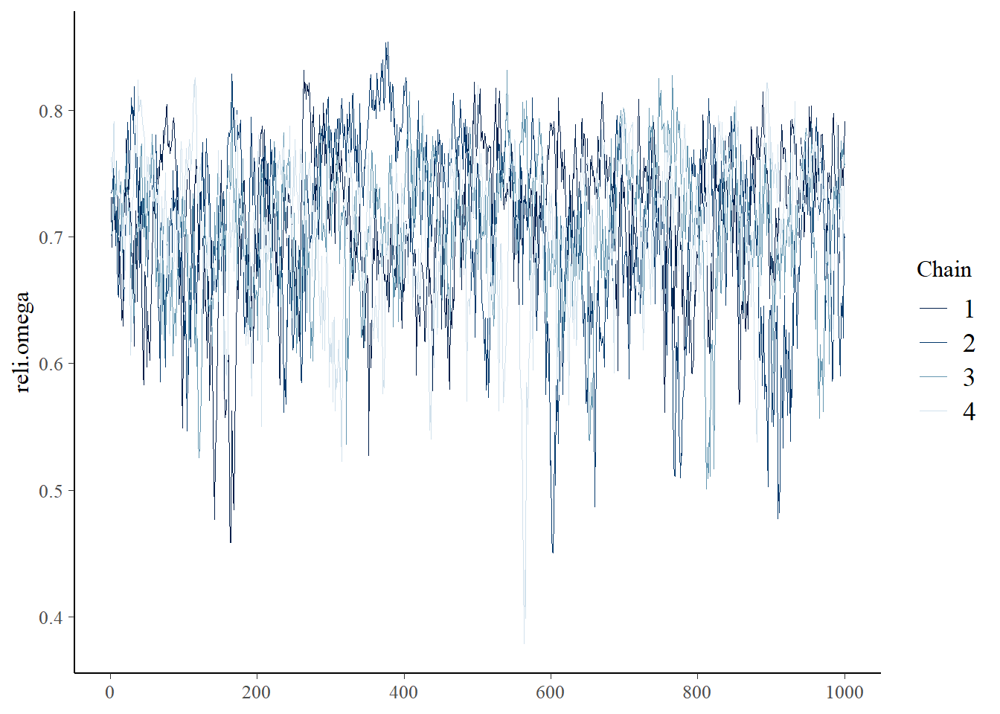

Simulation Study 1
Model 3 Results
R. Noah Padgett
2022-01-10
Last updated: 2022-01-16
Checks: 4 2
Knit directory: Padgett-Dissertation/
This reproducible R Markdown analysis was created with workflowr (version 1.6.2). The Checks tab describes the reproducibility checks that were applied when the results were created. The Past versions tab lists the development history.
Great job! The global environment was empty. Objects defined in the global environment can affect the analysis in your R Markdown file in unknown ways. For reproduciblity it’s best to always run the code in an empty environment.
The command set.seed(20210401) was run prior to running the code in the R Markdown file. Setting a seed ensures that any results that rely on randomness, e.g. subsampling or permutations, are reproducible.
Great job! Recording the operating system, R version, and package versions is critical for reproducibility.
- model3
- study1-model3-ppd
To ensure reproducibility of the results, delete the cache directory study1_model3_results_cache and re-run the analysis. To have workflowr automatically delete the cache directory prior to building the file, set delete_cache = TRUE when running wflow_build() or wflow_publish().
Great job! Using relative paths to the files within your workflowr project makes it easier to run your code on other machines.
Tracking code development and connecting the code version to the results is critical for reproducibility. To start using Git, open the Terminal and type git init in your project directory.
This project is not being versioned with Git. To obtain the full reproducibility benefits of using workflowr, please see ?wflow_start.
# Load packages & utility functions
source("code/load_packages.R")
source("code/load_utility_functions.R")
# environment options
options(scipen = 999, digits=3)
# generate data for study 1
source("code/study_1/study_1_generate_data.R")Simulated Data
# data parameters
paravec <- c(
N = 500
, J = 5 # N_items
, C = 3 # N_cat
, etaCor = .23
, etasd1 = 1
, etasd2 = sqrt(0.1)
, lambda=0.7
, nu=1.5
, sigma.ei=0.25
, rho1=0.1
)
# simulated then saved below
sim_tau <- matrix(
c(-0.822, -0.751, -0.616, -0.392, -0.865,
0.780, 0.882, 0.827, 1.030, 0.877),
ncol=2, nrow=5
)
# Use parameters to simulate data
sim.data <- simulate_data_misclass(paravec, tau=sim_tau)Describing the Observed (simulated) Data
d1 <- sim.data$Ysampled %>%
as.data.frame() %>%
select(contains("y")) %>%
mutate(id = 1:n()) %>%
pivot_longer(
cols = contains("y"),
names_to = c("item"),
values_to = "Response"
) %>%
mutate(item = ifelse(nchar(item) > 2, substr(item, 2, 3), substr(item, 2, 2)))
d2 <- sim.data$logt %>%
as.data.frame() %>%
select(contains("logt")) %>%
mutate(id = 1:n()) %>%
pivot_longer(
cols = contains("logt"),
names_to = c("item"),
values_to = "Time"
) %>%
mutate(item = ifelse(nchar(item) > 5, substr(item, 5, 6), substr(item, 5, 5)))
dat <- left_join(d1, d2)Joining, by = c("id", "item")dat_sum <- dat %>%
select(item, Response, Time) %>%
group_by(item) %>%
summarize(
p1 = table(Response)[1] / n(),
p2 = table(Response)[2] / n(),
p3 = table(Response)[3] / n(),
M1 = mean(Response, na.rm = T),
Mt = mean(Time, na.rm = T),
SDt = sd(Time, na.rm = T)
)
colnames(dat_sum) <-
c(
"Item",
"Prop. R == 1",
"Prop. R == 2",
"Prop. R == 3",
"Mean Response",
"Mean Response Time",
"SD Response Time"
)
dat_sum$Item <- paste0("item_", 1:N_items)
kable(dat_sum, format = "html", digits = 3) %>%
kable_styling(full_width = T)| Item | Prop. R == 1 | Prop. R == 2 | Prop. R == 3 | Mean Response | Mean Response Time | SD Response Time |
|---|---|---|---|---|---|---|
| item_1 | 0.308 | 0.404 | 0.288 | 1.98 | 1.39 | 0.597 |
| item_2 | 0.310 | 0.414 | 0.276 | 1.97 | 1.43 | 0.618 |
| item_3 | 0.338 | 0.386 | 0.276 | 1.94 | 1.43 | 0.613 |
| item_4 | 0.362 | 0.384 | 0.254 | 1.89 | 1.40 | 0.592 |
| item_5 | 0.292 | 0.422 | 0.286 | 1.99 | 1.36 | 0.582 |
# covariance among items
cov(sim.data$Ysampled) y1 y2 y3 y4 y5
y1 0.5968 0.0634 0.0428 0.0640 0.0319
y2 0.0634 0.5860 0.0440 0.0364 0.0258
y3 0.0428 0.0440 0.6114 0.0394 0.0457
y4 0.0640 0.0364 0.0394 0.6055 0.0655
y5 0.0319 0.0258 0.0457 0.0655 0.5791# correlation matrix
psych::polychoric(sim.data$Ysampled)Call: psych::polychoric(x = sim.data$Ysampled)
Polychoric correlations
y1 y2 y3 y4 y5
y1 1.00
y2 0.14 1.00
y3 0.09 0.09 1.00
y4 0.13 0.08 0.08 1.00
y5 0.07 0.05 0.09 0.14 1.00
with tau of
1 2
y1 -0.50 0.56
y2 -0.50 0.59
y3 -0.42 0.59
y4 -0.35 0.66
y5 -0.55 0.57Model 3: IFA with RT only
Model details
cat(read_file(paste0(w.d, "/code/study_1/model_3.txt")))model {
### Model
for(p in 1:N){
for(i in 1:nit){
# data model
y[p,i] ~ dcat(omega[p,i, ])
# LRV
ystar[p,i] ~ dnorm(lambda[i]*eta[p], 1)
# Pr(nu = 3)
pi[p,i,3] = phi(ystar[p,i] - tau[i,2])
# Pr(nu = 2)
pi[p,i,2] = phi(ystar[p,i] - tau[i,1]) - phi(ystar[p,i] - tau[i,2])
# Pr(nu = 1)
pi[p,i,1] = 1 - phi(ystar[p,i] - tau[i,1])
# MISCLASSIFICATION MODEL
for(c in 1:ncat){
# generate informative prior for misclassificaiton
# parameters based on RT
for(ct in 1:ncat){
alpha[p,i,ct,c] <- ifelse(c == ct,
ilogit(lrt[p,i]),
(1/(ncat-1))*(1-ilogit(lrt[p,i]))
)
}
# sample misclassification parameters using the informative priors
gamma[p,i,c,1:ncat] ~ ddirch(alpha[p,i,c,1:ncat])
# observed category prob (Pr(y=c))
omega[p,i, c] = gamma[p,i,c,1]*pi[p,i,1] +
gamma[p,i,c,2]*pi[p,i,2] +
gamma[p,i,c,3]*pi[p,i,3]
}
}
}
### Priors
# person parameters
for(p in 1:N){
eta[p] ~ dnorm(0, 1) # latent ability
}
for(i in 1:nit){
# Thresholds
tau[i, 1] ~ dnorm(0.0,0.1)
tau[i, 2] ~ dnorm(0, 0.1)T(tau[i, 1],)
# loadings
lambda[i] ~ dnorm(0, .44)T(0,)
# LRV total variance
# total variance = residual variance + fact. Var.
theta[i] = 1 + pow(lambda[i],2)
# standardized loading
lambda.std[i] = lambda[i]/pow(theta[i],0.5)
}
# compute omega
lambda_sum[1] = lambda[1]
for(i in 2:nit){
#lambda_sum (sum factor loadings)
lambda_sum[i] = lambda_sum[i-1]+lambda[i]
}
reli.omega = pow(lambda_sum[nit],2)/(pow(lambda_sum[nit], 2)+ (nit))
}Model results
# Save parameters
jags.params <- c("tau", "lambda", "theta", "reli.omega", "lambda.std")
# initial-values
jags.inits <- function(){
list(
"tau"=matrix(c(-0.822, -0.751, -0.616, -0.392, -0.865,
0.780, 0.882, 0.827, 1.030, 0.877),
ncol=2, nrow=5),
"lambda"=rep(0.7,5),
"eta"=sim.data$eta[,1,drop=T],
"ystar"=t(sim.data$ystar),
"gamma"=sim.data$gamma
)
}
mydata <- list(
y = sim.data$Ysampled,
lrt = sim.data$logt,
N = nrow(sim.data$Ysampled),
nit = ncol(sim.data$Ysampled),
ncat = 3
)
model.fit <- R2jags::jags(
model = paste0(w.d, "/code/study_1/model_3.txt"),
parameters.to.save = jags.params,
data = mydata,
n.chains = 4,
n.burnin = 5000,
n.iter = 10000
)module glm loadedCompiling model graph
Resolving undeclared variables
Allocating nodes
Graph information:
Observed stochastic nodes: 2500
Unobserved stochastic nodes: 10515
Total graph size: 108063
Initializing modelprint(model.fit, width=1000)Inference for Bugs model at "C:/Users/noahp/Documents/GitHub/Padgett-Dissertation/code/study_1/model_3.txt", fit using jags,
4 chains, each with 10000 iterations (first 5000 discarded), n.thin = 5
n.sims = 4000 iterations saved
mu.vect sd.vect 2.5% 25% 50% 75% 97.5% Rhat n.eff
lambda[1] 0.894 0.427 0.281 0.611 0.823 1.078 2.005 1.09 48
lambda[2] 0.858 0.385 0.297 0.584 0.794 1.067 1.737 1.01 190
lambda[3] 0.466 0.220 0.082 0.310 0.451 0.600 0.952 1.04 74
lambda[4] 0.902 0.383 0.327 0.627 0.843 1.105 1.804 1.05 60
lambda[5] 0.432 0.230 0.056 0.262 0.407 0.577 0.947 1.01 390
lambda.std[1] 0.621 0.158 0.271 0.521 0.635 0.733 0.895 1.07 60
lambda.std[2] 0.610 0.157 0.285 0.504 0.622 0.730 0.867 1.01 270
lambda.std[3] 0.403 0.157 0.082 0.296 0.411 0.514 0.689 1.04 83
lambda.std[4] 0.630 0.150 0.311 0.531 0.644 0.742 0.875 1.04 69
lambda.std[5] 0.376 0.167 0.056 0.253 0.377 0.500 0.688 1.01 390
reli.omega 0.709 0.060 0.570 0.674 0.717 0.752 0.802 1.01 2200
tau[1,1] -0.889 0.208 -1.411 -0.991 -0.860 -0.752 -0.575 1.13 41
tau[2,1] -0.886 0.178 -1.303 -0.987 -0.867 -0.763 -0.594 1.01 430
tau[3,1] -0.629 0.124 -0.874 -0.713 -0.626 -0.543 -0.396 1.01 210
tau[4,1] -0.543 0.152 -0.879 -0.630 -0.530 -0.444 -0.271 1.01 220
tau[5,1] -0.875 0.137 -1.162 -0.961 -0.871 -0.779 -0.619 1.00 4000
tau[1,2] 1.085 0.221 0.756 0.944 1.056 1.181 1.653 1.08 53
tau[2,2] 1.159 0.210 0.828 1.015 1.132 1.267 1.647 1.01 210
tau[3,2] 1.044 0.139 0.783 0.949 1.041 1.134 1.324 1.00 660
tau[4,2] 1.312 0.239 0.938 1.152 1.284 1.429 1.867 1.06 55
tau[5,2] 0.961 0.135 0.700 0.869 0.960 1.052 1.224 1.00 4000
theta[1] 1.982 1.065 1.079 1.373 1.677 2.163 5.018 1.16 34
theta[2] 1.885 0.840 1.088 1.341 1.630 2.138 4.018 1.03 130
theta[3] 1.266 0.237 1.007 1.096 1.204 1.360 1.906 1.05 58
theta[4] 1.960 0.865 1.107 1.394 1.710 2.222 4.255 1.06 56
theta[5] 1.240 0.239 1.003 1.069 1.166 1.333 1.897 1.01 480
deviance 4248.466 72.869 4105.088 4199.490 4247.851 4297.012 4395.539 1.00 870
For each parameter, n.eff is a crude measure of effective sample size,
and Rhat is the potential scale reduction factor (at convergence, Rhat=1).
DIC info (using the rule, pD = var(deviance)/2)
pD = 2648.1 and DIC = 6896.6
DIC is an estimate of expected predictive error (lower deviance is better).
Warning: The above code chunk cached its results, but it won’t be re-run if previous chunks it depends on are updated. If you need to use caching, it is highly recommended to also set knitr::opts_chunk$set(autodep = TRUE) at the top of the file (in a chunk that is not cached). Alternatively, you can customize the option dependson for each individual chunk that is cached. Using either autodep or dependson will remove this warning. See the knitr cache options for more details.
Posterior Distribution Summary
jags.mcmc <- as.mcmc(model.fit)
a <- colnames(as.data.frame(jags.mcmc[[1]]))
fit.mcmc <- data.frame(as.matrix(jags.mcmc, chains = T, iters = T))
colnames(fit.mcmc) <- c("chain", "iter", a)
fit.mcmc.ggs <- ggmcmc::ggs(jags.mcmc) # for GRB plot
# save posterior draws for later
write.csv(x=fit.mcmc, file=paste0(getwd(),"/data/study_1/posterior_draws_m3.csv"))Categroy Thresholds (\(\tau\))
# tau
bayesplot::mcmc_areas(fit.mcmc, regex_pars = "tau", prob = 0.8); ggsave("fig/study1_model3_tau_dens.pdf")Saving 7 x 5 in imagebayesplot::mcmc_acf(fit.mcmc, regex_pars = "tau"); ggsave("fig/study1_model3_tau_acf.pdf")Saving 7 x 5 in imagebayesplot::mcmc_trace(fit.mcmc, regex_pars = "tau"); ggsave("fig/study1_model3_tau_trace.pdf")Saving 7 x 5 in imageggmcmc::ggs_grb(fit.mcmc.ggs, family = "tau"); ggsave("fig/study1_model3_tau_grb.pdf")Saving 7 x 5 in imageFactor Loadings (\(\lambda\))
bayesplot::mcmc_areas(fit.mcmc, regex_pars = "lambda", prob = 0.8)bayesplot::mcmc_acf(fit.mcmc, regex_pars = "lambda")bayesplot::mcmc_trace(fit.mcmc, regex_pars = "lambda")ggmcmc::ggs_grb(fit.mcmc.ggs, family = "lambda")bayesplot::mcmc_areas(fit.mcmc, regex_pars = "lambda.std", prob = 0.8); ggsave("fig/study1_model3_lambda_dens.pdf")
Saving 7 x 5 in imagebayesplot::mcmc_acf(fit.mcmc, regex_pars = "lambda.std"); ggsave("fig/study1_model3_lambda_acf.pdf")Saving 7 x 5 in imagebayesplot::mcmc_trace(fit.mcmc, regex_pars = "lambda.std"); ggsave("fig/study1_model3_lambda_trace.pdf")Saving 7 x 5 in imageggmcmc::ggs_grb(fit.mcmc.ggs, family = "lambda.std"); ggsave("fig/study1_model3_lambda_grb.pdf")Saving 7 x 5 in imageLatent Response Total Variance (\(\theta\))
bayesplot::mcmc_areas(fit.mcmc, regex_pars = "theta", prob = 0.8); ggsave("fig/study1_model3_theta_dens.pdf")Saving 7 x 5 in imagebayesplot::mcmc_acf(fit.mcmc, regex_pars = "theta"); ggsave("fig/study1_model3_theta_acf.pdf")Saving 7 x 5 in imagebayesplot::mcmc_trace(fit.mcmc, regex_pars = "theta"); ggsave("fig/study1_model3_theta_trace.pdf")Saving 7 x 5 in imageggmcmc::ggs_grb(fit.mcmc.ggs, family = "theta"); ggsave("fig/study1_model3_theta_grb.pdf")Saving 7 x 5 in imageFactor Reliability Omega (\(\omega\))
bayesplot::mcmc_areas(fit.mcmc, regex_pars = "reli.omega", prob = 0.8); ggsave("fig/study1_model3_omega_dens.pdf")Saving 7 x 5 in imagebayesplot::mcmc_acf(fit.mcmc, regex_pars = "reli.omega"); ggsave("fig/study1_model3_omega_acf.pdf")Saving 7 x 5 in imagebayesplot::mcmc_trace(fit.mcmc, regex_pars = "reli.omega"); ggsave("fig/study1_model3_omega_trace.pdf")
Saving 7 x 5 in imageggmcmc::ggs_grb(fit.mcmc.ggs, family = "reli.omega"); ggsave("fig/study1_model3_omega_grb.pdf")Saving 7 x 5 in image# extract omega posterior for results comparison
extracted_omega <- data.frame(model_3 = fit.mcmc$reli.omega)
write.csv(x=extracted_omega, file=paste0(getwd(),"/data/study_1/extracted_omega_m3.csv"))Posterior Predictive Distributions
# Posterior Predictive Check
Niter <- 200
model.fit$model$recompile()Compiling model graph
Resolving undeclared variables
Allocating nodes
Graph information:
Observed stochastic nodes: 2500
Unobserved stochastic nodes: 10515
Total graph size: 108063
Initializing modelfit.extra <- rjags::jags.samples(model.fit$model, variable.names = "omega", n.iter = Niter)NOTE: Stopping adaptationN <- model.fit$model$data()[[1]]
nit <- 5
nchain=4
C <- 3
n <- i <- iter <- ppc.row.i <- 1
y.prob.ppc <- array(dim=c(Niter*nchain, nit, C))
for(chain in 1:nchain){
for(iter in 1:Niter){
# initialize simulated y for this iteration
y <- matrix(nrow=N, ncol=nit)
# loop over item
for(i in 1:nit){
# simulated data for item i for each person
for(n in 1:N){
y[n,i] <- sample(1:C, 1, prob = fit.extra$omega[n, i, 1:C, iter, chain])
}
# computer proportion of each response category
for(c in 1:C){
y.prob.ppc[ppc.row.i,i,c] <- sum(y[,i]==c)/N
}
}
# update row of output
ppc.row.i = ppc.row.i + 1
}
}
yppcmat <- matrix(c(y.prob.ppc), ncol=1)
z <- expand.grid(1:(Niter*nchain), 1:nit, 1:C)
yppcmat <- data.frame( iter = z[,1], nit=z[,2], C=z[,3], yppc = yppcmat)
ymat <- model.fit$model$data()[["y"]]
y.prob <- matrix(ncol=C, nrow=nit)
for(i in 1:nit){
for(c in 1:C){
y.prob[i,c] <- sum(ymat[,i]==c)/N
}
}
yobsmat <- matrix(c(y.prob), ncol=1)
z <- expand.grid(1:nit, 1:C)
yobsmat <- data.frame(nit=z[,1], C=z[,2], yobs = yobsmat)
plot.ppc <- full_join(yppcmat, yobsmat)Joining, by = c("nit", "C")p <- plot.ppc %>%
mutate(C = as.factor(C),
item = nit) %>%
ggplot()+
geom_boxplot(aes(x=C,y=y.prob.ppc), outlier.colour = NA)+
geom_point(aes(x=C,y=yobs), color="red")+
lims(y=c(0, 0.67))+
labs(y="Posterior Predictive Category Proportion", x="Item Category")+
facet_wrap(.~nit, nrow=1)+
theme_bw()+
theme(
panel.grid = element_blank(),
strip.background = element_rect(fill="white")
)
pggsave(filename = "fig/study1_model3_ppc_y.pdf",plot=p,width = 6, height=4,units="in")
ggsave(filename = "fig/study1_model3_ppc_y.png",plot=p,width = 6, height=4,units="in")
ggsave(filename = "fig/study1_model3_ppc_y.eps",plot=p,width = 6, height=4,units="in")Manuscript Table and Figures
Table
# print to xtable
print(
xtable(
model.fit$BUGSoutput$summary,
caption = c("study1 Model 3 posterior distribution summary")
,align = "lrrrrrrrrr"
),
include.rownames=T,
booktabs=T
)% latex table generated in R 4.0.5 by xtable 1.8-4 package
% Sun Jan 16 13:44:12 2022
\begin{table}[ht]
\centering
\begin{tabular}{lrrrrrrrrr}
\toprule
& mean & sd & 2.5\% & 25\% & 50\% & 75\% & 97.5\% & Rhat & n.eff \\
\midrule
deviance & 4248.47 & 72.87 & 4105.09 & 4199.49 & 4247.85 & 4297.01 & 4395.54 & 1.01 & 870.00 \\
lambda[1] & 0.89 & 0.43 & 0.28 & 0.61 & 0.82 & 1.08 & 2.00 & 1.09 & 48.00 \\
lambda[2] & 0.86 & 0.38 & 0.30 & 0.58 & 0.79 & 1.07 & 1.74 & 1.02 & 190.00 \\
lambda[3] & 0.47 & 0.22 & 0.08 & 0.31 & 0.45 & 0.60 & 0.95 & 1.04 & 74.00 \\
lambda[4] & 0.90 & 0.38 & 0.33 & 0.63 & 0.84 & 1.11 & 1.80 & 1.05 & 60.00 \\
lambda[5] & 0.43 & 0.23 & 0.06 & 0.26 & 0.41 & 0.58 & 0.95 & 1.01 & 390.00 \\
lambda.std[1] & 0.62 & 0.16 & 0.27 & 0.52 & 0.64 & 0.73 & 0.89 & 1.07 & 60.00 \\
lambda.std[2] & 0.61 & 0.16 & 0.28 & 0.50 & 0.62 & 0.73 & 0.87 & 1.01 & 270.00 \\
lambda.std[3] & 0.40 & 0.16 & 0.08 & 0.30 & 0.41 & 0.51 & 0.69 & 1.04 & 83.00 \\
lambda.std[4] & 0.63 & 0.15 & 0.31 & 0.53 & 0.64 & 0.74 & 0.87 & 1.04 & 69.00 \\
lambda.std[5] & 0.38 & 0.17 & 0.06 & 0.25 & 0.38 & 0.50 & 0.69 & 1.01 & 390.00 \\
reli.omega & 0.71 & 0.06 & 0.57 & 0.67 & 0.72 & 0.75 & 0.80 & 1.01 & 2200.00 \\
tau[1,1] & -0.89 & 0.21 & -1.41 & -0.99 & -0.86 & -0.75 & -0.58 & 1.13 & 41.00 \\
tau[2,1] & -0.89 & 0.18 & -1.30 & -0.99 & -0.87 & -0.76 & -0.59 & 1.01 & 430.00 \\
tau[3,1] & -0.63 & 0.12 & -0.87 & -0.71 & -0.63 & -0.54 & -0.40 & 1.01 & 210.00 \\
tau[4,1] & -0.54 & 0.15 & -0.88 & -0.63 & -0.53 & -0.44 & -0.27 & 1.01 & 220.00 \\
tau[5,1] & -0.87 & 0.14 & -1.16 & -0.96 & -0.87 & -0.78 & -0.62 & 1.00 & 4000.00 \\
tau[1,2] & 1.08 & 0.22 & 0.76 & 0.94 & 1.06 & 1.18 & 1.65 & 1.09 & 53.00 \\
tau[2,2] & 1.16 & 0.21 & 0.83 & 1.01 & 1.13 & 1.27 & 1.65 & 1.01 & 210.00 \\
tau[3,2] & 1.04 & 0.14 & 0.78 & 0.95 & 1.04 & 1.13 & 1.32 & 1.00 & 660.00 \\
tau[4,2] & 1.31 & 0.24 & 0.94 & 1.15 & 1.28 & 1.43 & 1.87 & 1.06 & 55.00 \\
tau[5,2] & 0.96 & 0.13 & 0.70 & 0.87 & 0.96 & 1.05 & 1.22 & 1.00 & 4000.00 \\
theta[1] & 1.98 & 1.07 & 1.08 & 1.37 & 1.68 & 2.16 & 5.02 & 1.16 & 34.00 \\
theta[2] & 1.88 & 0.84 & 1.09 & 1.34 & 1.63 & 2.14 & 4.02 & 1.03 & 130.00 \\
theta[3] & 1.27 & 0.24 & 1.01 & 1.10 & 1.20 & 1.36 & 1.91 & 1.05 & 58.00 \\
theta[4] & 1.96 & 0.86 & 1.11 & 1.39 & 1.71 & 2.22 & 4.25 & 1.06 & 56.00 \\
theta[5] & 1.24 & 0.24 & 1.00 & 1.07 & 1.17 & 1.33 & 1.90 & 1.01 & 480.00 \\
\bottomrule
\end{tabular}
\caption{study1 Model 3 posterior distribution summary}
\end{table}Figure
plot.dat <- fit.mcmc %>%
select(!c("iter", "deviance", "reli.omega", paste0("lambda[",1:5,"]")))%>%
pivot_longer(
cols= !c("chain"),
names_to="variable",
values_to="value"
) %>%
mutate(
variable = factor(
variable,
levels = c(
"lambda.std[1]", "theta[1]", "tau[1,1]", "tau[1,2]",
"lambda.std[2]", "theta[2]", "tau[2,1]", "tau[2,2]",
"lambda.std[3]", "theta[3]", "tau[3,1]", "tau[3,2]",
"lambda.std[4]", "theta[4]", "tau[4,1]", "tau[4,2]",
"lambda.std[5]", "theta[5]", "tau[5,1]", "tau[5,2]"
), ordered = T
)
)
p <- ggplot(plot.dat, aes(x=value, group=variable))+
geom_density(adjust=2)+
facet_wrap(variable~., scales="free_y", ncol=4) +
lims(x=c(-2, 4))+
labs(x="Magnitude of Parameter",
y="Posterior Density")+
theme_bw()+
theme(
panel.grid = element_blank(),
strip.background = element_rect(fill="white"),
axis.text.y = element_blank(),
axis.ticks.y = element_blank()
)
pWarning: Removed 448 rows containing non-finite values (stat_density).ggsave(filename = "fig/study1_model3_posterior_dist.pdf",plot=p,width = 7, height=5,units="in")Warning: Removed 448 rows containing non-finite values (stat_density).ggsave(filename = "fig/study1_model3_posterior_dist.png",plot=p,width = 7, height=5,units="in")Warning: Removed 448 rows containing non-finite values (stat_density).ggsave(filename = "fig/study1_model3_posterior_dist.eps",plot=p,width = 7, height=5,units="in")Warning: Removed 448 rows containing non-finite values (stat_density).
sessionInfo()R version 4.0.5 (2021-03-31)
Platform: x86_64-w64-mingw32/x64 (64-bit)
Running under: Windows 10 x64 (build 22000)
Matrix products: default
locale:
[1] LC_COLLATE=English_United States.1252
[2] LC_CTYPE=English_United States.1252
[3] LC_MONETARY=English_United States.1252
[4] LC_NUMERIC=C
[5] LC_TIME=English_United States.1252
attached base packages:
[1] stats graphics grDevices utils datasets methods base
other attached packages:
[1] car_3.0-10 carData_3.0-4 mvtnorm_1.1-1
[4] LaplacesDemon_16.1.4 runjags_2.2.0-2 lme4_1.1-26
[7] Matrix_1.3-2 sirt_3.9-4 R2jags_0.6-1
[10] rjags_4-12 eRm_1.0-2 diffIRT_1.5
[13] statmod_1.4.35 xtable_1.8-4 kableExtra_1.3.4
[16] lavaan_0.6-7 polycor_0.7-10 bayesplot_1.8.0
[19] ggmcmc_1.5.1.1 coda_0.19-4 data.table_1.14.0
[22] patchwork_1.1.1 forcats_0.5.1 stringr_1.4.0
[25] dplyr_1.0.5 purrr_0.3.4 readr_1.4.0
[28] tidyr_1.1.3 tibble_3.1.0 ggplot2_3.3.5
[31] tidyverse_1.3.0 workflowr_1.6.2
loaded via a namespace (and not attached):
[1] minqa_1.2.4 TAM_3.5-19 colorspace_2.0-0 rio_0.5.26
[5] ellipsis_0.3.1 ggridges_0.5.3 rprojroot_2.0.2 fs_1.5.0
[9] rstudioapi_0.13 farver_2.1.0 fansi_0.4.2 lubridate_1.7.10
[13] xml2_1.3.2 splines_4.0.5 mnormt_2.0.2 knitr_1.31
[17] jsonlite_1.7.2 nloptr_1.2.2.2 broom_0.7.5 dbplyr_2.1.0
[21] compiler_4.0.5 httr_1.4.2 backports_1.2.1 assertthat_0.2.1
[25] cli_2.3.1 later_1.1.0.1 htmltools_0.5.1.1 tools_4.0.5
[29] gtable_0.3.0 glue_1.4.2 reshape2_1.4.4 Rcpp_1.0.7
[33] cellranger_1.1.0 jquerylib_0.1.3 vctrs_0.3.6 svglite_2.0.0
[37] nlme_3.1-152 psych_2.0.12 xfun_0.21 ps_1.6.0
[41] openxlsx_4.2.3 rvest_1.0.0 lifecycle_1.0.0 MASS_7.3-53.1
[45] scales_1.1.1 ragg_1.1.1 hms_1.0.0 promises_1.2.0.1
[49] parallel_4.0.5 RColorBrewer_1.1-2 curl_4.3 yaml_2.2.1
[53] sass_0.3.1 reshape_0.8.8 stringi_1.5.3 highr_0.8
[57] zip_2.1.1 boot_1.3-27 rlang_0.4.10 pkgconfig_2.0.3
[61] systemfonts_1.0.1 evaluate_0.14 lattice_0.20-41 labeling_0.4.2
[65] tidyselect_1.1.0 GGally_2.1.1 plyr_1.8.6 magrittr_2.0.1
[69] R6_2.5.0 generics_0.1.0 DBI_1.1.1 foreign_0.8-81
[73] pillar_1.5.1 haven_2.3.1 withr_2.4.1 abind_1.4-5
[77] modelr_0.1.8 crayon_1.4.1 utf8_1.1.4 tmvnsim_1.0-2
[81] rmarkdown_2.7 grid_4.0.5 readxl_1.3.1 CDM_7.5-15
[85] pbivnorm_0.6.0 git2r_0.28.0 reprex_1.0.0 digest_0.6.27
[89] webshot_0.5.2 httpuv_1.5.5 textshaping_0.3.1 stats4_4.0.5
[93] munsell_0.5.0 viridisLite_0.3.0 bslib_0.2.4 R2WinBUGS_2.1-21